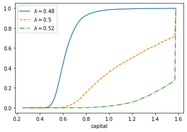
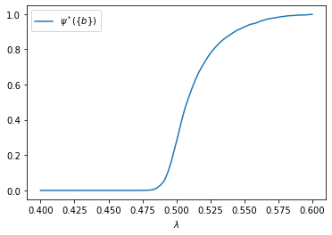

Chapter 11 Code¶
We begin with some imports
import numpy as np
import matplotlib.pyplot as plt
from numba import njit
Now we recreate figure 11.3. Our first step is to set the parameters.
alpha = 0.6
Q = 2
R = 1
sigma = 0.1 # variance
mu = - sigma**2 / 2
Next we introduce useful functions.
@njit
def wage(k, z):
return (1 - alpha) * (k**alpha) * z
@njit
def theta(w, lda):
if (w < 1 - lda):
return lda / (1 - w)
else:
return 1
@njit
def g(y):
return (y/alpha)**(1/(alpha-1))
@njit
def update(k, z, lda):
" Update the state."
return g(R / (Q * theta(wage(k, z), lda)))
@njit
def a(lda):
return g(R / (lda * Q))
@njit
def generate_ts(lda, init=None, seed=1234, ts_length=10_000):
" Generate a time series from the model."
np.random.seed(seed)
K = np.empty(ts_length)
if init is None:
init = a(lda)
K[0] = init
for t in range(ts_length-1):
z = np.exp(mu + sigma * np.random.randn())
K[t+1] = update(K[t], z, lda)
return K
Now we recreate the plot.
b = g(R / Q)
lambdas = 0.48, 0.5, 0.52
line_type = '-', '--', '-.'
mc_size = 5000
grid_size = 150
fig, ax = plt.subplots()
for lda, lt in zip(lambdas, line_type):
xvec = np.linspace(a(lda), b, grid_size)
obs = generate_ts(lda, ts_length=mc_size)
def ecdf(y):
return sum(obs <= y) / mc_size
yvec = [ecdf(x) for x in xvec]
ax.plot(xvec, yvec, lt, label=f'$\\lambda={lda}$')
ax.set_xlabel('capital')
ax.legend()
plt.show()

Now we address exercise 11.26.
We need to determine the fraction of time the sample spends at the point \(b\) in the state space over a long horizon, for different values of \(\lambda\).
grid_size = 80
lambdas = np.linspace(0.4, 0.6, grid_size)
mc_size = 5000
prob_at_b = np.empty_like(lambdas)
for i, lda in enumerate(lambdas):
obs = generate_ts(lda, ts_length=mc_size)
prob_at_b[i] = np.mean(obs == b)
fig, ax = plt.subplots()
ax.plot(lambdas, prob_at_b, label='$\\psi^*(\{b\})$')
ax.set_xlabel('$\\lambda$')
ax.legend()
plt.show()
